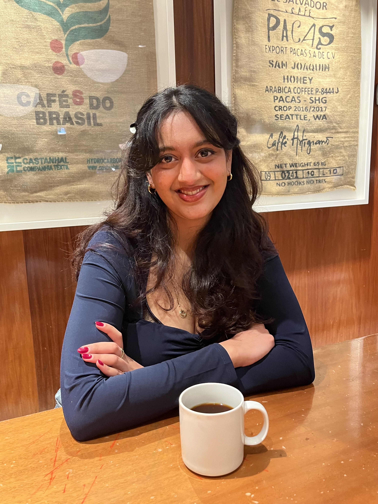

Chief of Staff at StartupBake
First employee, owned the entire recruiting arm end-to-end. Worked with founders like Phoebe Gates and recruited for founders backed by a16z, Sequoia, and YC.

Integrated Sciences, specializing in Neuroscience and Pharmacology. I chose to pursue an interdisciplinary degree to gain a comprehensive understanding of how drugs can impact both the body and the brain, and how these factors affect long-term recovery.
First employee, owned the entire recruiting arm end-to-end. Worked with founders like Phoebe Gates and recruited for founders backed by a16z, Sequoia, and YC.
1M+ followers across all platforms, with coverage in The New York Times and Wall Street Journal. Sole operator; I helped scale her business and bring her book published by Penguin Random House from first draft to the NYT bestseller list.
Reflections on life; thoughts on love and interpersonal dynamics, mindsets, healing, and improvement. Stories have the power to change the world. Some personal thoughts as well.
Ran hundreds of events and built a community of thousands of builders in Vancouver that's since produced VC-backed startups, funded research, viral videos, and products used by hundreds of thousands of people.
Top player in Hong Kong and Canada. I don't know if I'm proud of this one but my friends told me to put it on here.